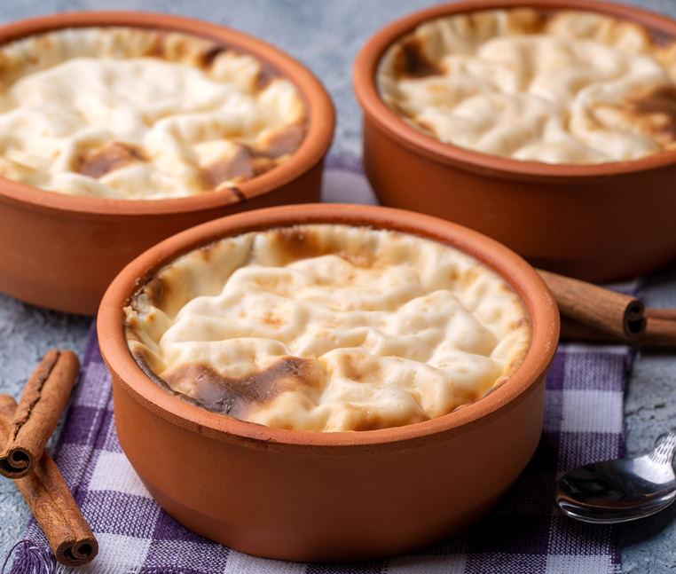
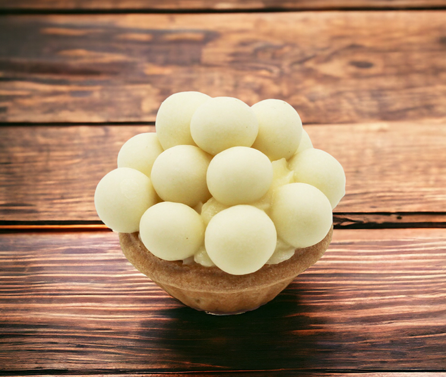
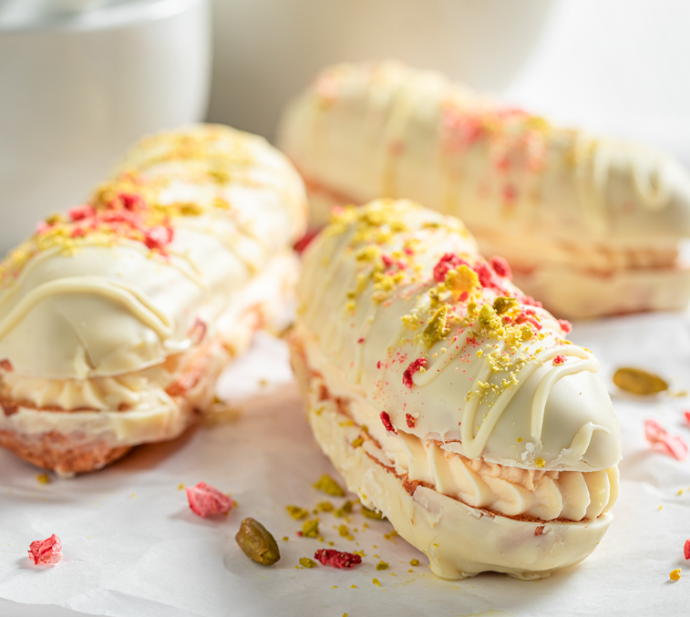

Geleneksel lezzetleri modern bir dokunuşla sunan firmamız, en özel günlerinize tat katan güllaçlarıyla göz dolduruyor. İnceltilmiş güllaç yapraklarını özenle hazırlayıp enfes sütlü şerbet ve ceviz ile bir araya getiriyoruz.

Çilekli Magnolia tatlısı, en taze çileklerle süslenmiş lezzetli muhallebiyle buluşturan ustalarımız her gün sizler için günlük hazırlamaktadır.... Toptan satışta uygun fiyatlarla müşterilerimize sunulmaktadır. Restoranlar, kafeler, pastaneler ve catering firmaları gibi işletmeler için ideal bir seçenektir.

Günlük ve benzersiz aromasıyla damakları şenlendiren bu tatlımız, muhallebiyle beraber eşsiz tadını, Oreo'nun çikolata ve bisküvi lezzetiyle harmanlıyor..... Doğanın enfes lezzetleriyle buluştuğunuzda ortaya çıkan tatlı bir deneyim ! Profesyonel ekibimiz, size en uygun fiyatlarla en kaliteli ürünleri sunmak için hazır.

Muzlu Magnolia tatlısı, en taze çileklerle süslenmiş lezzetli muhallebiyle buluşturan ustalarımız her gün sizler için günlük hazırlamaktadır.Şimdi İncele ! Muzlu Magnolia Muhallebisi, toptan satışta uygun fiyatlarla sunulmaktadır. Restoranlar, kafeler, pastaneler ve catering firmaları gibi işletmeler için ideal bir seçenektir.

Supangle üretiminde uzmanlaşmış bir firmayız. Yüksek kaliteli malzemeler kullanarak lezzetli ve besleyici supangle ürünleri üretiyoruz. Geniş çeşitliliğe sahip ürünlerimizle her damak zevkine hitap ediyoruz. Toptan satış yaparak restoranlar, kafeler ve marketler gibi işletmelere supangle ihtiyaçlarını karşılıyoruz.

Eşsiz lezzeti ve çikolata kaplamasıyla dikkat çeken profiterollerimiz, özel tarifimiz ve özenli üretimimizle müşterilerimizin beğenisini kazanmaktadır. Kaliteli malzemeler kullanılarak üretilen profiterollerimiz, damaklarda unutulmaz bir tat bırakmaktadır.

Bir dilim tatlıda nostaljik bir yolculuğa çıkmaya hazır mısınız? Geleneksel lezzetimiz, özenle hazırlanmış taze malzemelerle üretilen enfes Sütlaç sizleri bekliyor ! Geleneksel tariflerimize sadık kalarak hazırladığımız sütlaçlarımız, enfes vanilya aroması ve hafif tatlının muhteşem uyumuyla öne çıkıyor.

Özenle seçtiğimiz çileklerle hazırladığımız tartoletlerimiz, yumuşacık keki ve yoğun çilek tadıyla damaklarda unutulmaz bir lezzet bırakıyor. Günlük olarak taze ve doğal malzemeler kullanarak ürettiğimiz çilekli tartoletlerimizi her daim taze ve lezzetli bir şekilde sizlere sunuyoruz.

Fındıklı tartolet üretiminde uzman olan firmamız, enfes lezzetlerini şimdi toptan satışa sunuyor. Minik tartolet hamurlarının içine bolca fındık koyarak, lezzetli bir tat oluşturuyoruz. Her biri özenle hazırlanan fındıklı tartoletlerimiz, misafirleriniz için harika bir seçenek olacak.

Muzlu Tartolet, enfes muz aromasıyla lezzetli bir tatlı deneyimi sunuyor. Mis gibi taze muzlu kreması ve hafif kıtır tartolet kabuğu ile özel günlerinizde ve özel davetlerinizde keyifle servis edebileceğiniz bir lezzet.

Özenle hazırladığımız vişneli tartoletlerimizle lezzetli bir tatlı deneyimi yaşamanızı sağlıyoruz. Kaliteli malzemeler kullanarak ürettiğimiz vişneli tartoletlerimiz, enfes vişne dolgusu ve kıtır hamuruyla damaklarınızı şenlendirecek.

Özenle hazırladığımız vişneli tartoletlerimizle lezzetli bir tatlı deneyimi yaşamanızı sağlıyoruz. Kaliteli malzemeler kullanarak ürettiğimiz vişneli tartoletlerimiz, enfes vişne dolgusu ve kıtır hamuruyla damaklarınızı şenlendirecek.

Karamelli trileçe, lezzetli ve hafif bir tatlı olan trileçenin karamelli versiyonudur. Özel olarak hazırlanan karamel sosuyla ve yumuşacık pandispanyasıyla damaklarınıza unutulmaz bir tat deneyimi yaşatacak olan bu nefis tatlı, özellikle tatlı krizlerinizi bastırmak için ideal bir seçenektir.

Kaliteli ve lezzetli frambuazlı trileçe ürünümüzü sizlerin beğenisine sunmaktan gurur duyuyoruz. İnce dokulu kek tabanı, şerbetiyle ıslanmış ve bol frambuazlı krema ile harmanlanmış olan bu enfes tatlı, damaklarınızı şenlendirecek. Doğal ve taze malzemelerle üretilen frambuazlı trileçe, hem göz zevkinize hem de damak tadınıza hitap edecek.

Çikolatalı eklerimiz, sadece en kaliteli çikolatalar kullanılarak hazırlanmakta ve müşterilerimizin damak zevkine hitap edecek şekilde çeşitlendirilmektedir. By Ganaj olarak, müşterilerimizin sağlığına ve memnuniyetine önem vermekte ve her ürünümüzü titizlikle hazırlamaktayız.

Fıstık veya fındıklı eklerin yanı sıra beyaz çikolatalı ekler de müşterilerimize sunuyoruz. İncecik çıtır hamuru ve içindeki yoğun beyaz çikolata ile lezzetli bir deneyim sunan bu ürünler, tatlı ihtiyacınızı mükemmel bir şekilde karşılayacak.

Muzlu rulo sarma pasta, lezzetli ve hafif bir tatlı alternatifi arayanların vazgeçilmezidir. İncecik pandispanya tabanının üzerine sürülen krem şanti ve muz dilimleriyle dolgun hale getirilen bu pasta, her diliminde ayrı bir lezzet sunar.

Lezzetli ve kokusuyla büyüleyen limonlu cheesecake'lerimiz, özenle seçilmiş malzemelerle üretilerek damakları şenlendiriyor. Yumuşacık ve kremsi dokusuyla her lokmada mutluluk vaat eden cheesecake'lerimiz, limonun ferahlatıcı tadıyla birleşerek eşsiz bir lezzet sunuyor.

Frambuazlı cheesecake tutkunları için özel bir lezzet sunuyoruz! En taze ve kaliteli malzemeleri kullanarak ürettiğimiz frambuazlı cheesecake'lerimiz, tatlı krizlerinizi sonlandırmak için ideal bir seçenektir.
Kurumsal taleplerinize özel, hijyenik ve kaliteli üretim anlayışımızla, toptan kandil simidi temini konusunda sektördeki en güvenilir iş ortağınız olmayı hedefliyoruz.

Taptaze ve Lezzetli Simitlerin Güvencesi: byganaj.com Geleneksel lezzetlerin en sevilenlerinden biri olan simit, artık byganaj.com kalitesiyle toptan olarak işletmelere ulaşıyor

Tek kişilik tatlı keyfini doruklara çıkaran, enfes bir lezzet arayanların vazgeçilmezi: Fıstık Çikolatalı Tek Kişilik Pasta! İnce dokusu ve benzersiz tadıyla damakları şenlendiren bu pasta, her ısırıkta mutluluğunuzu artıracak.

Şık tasarımı ve enfes lezzetiyle müşterilerimizin favorisi olan frambuazlı pastamız, özel tarifimiz ve kaliteli malzemelerimizle özenle hazırlanmaktadır. Hafif ve yumuşak dokusuyla her diliminde frambuazın enfes tadını hissedeceğiniz bu pastamızı siz de müşterilerinize sunabilirsiniz.

Lezzetli ve kaliteli pastalarıyla müşterilerinin beğenisini kazanan firmamız, toptan pasta üretimi ve satışı yapmaktadır. Ürünlerimiz en taze malzemelerle ve hijyenik koşullarda üretilmekte olup, her biri özenle hazırlanmaktadır.

Firmamızın ürünleri arasında yer alan meyveli pastaları müşterilerinize sunarken, en lezzetli ve doğal malzemeleri kullanarak kaliteli ürünler üretiyoruz. Her bir pastamızda taze meyvelerle yapılan harika tatlar bulabilirsiniz.

Krokan fındıklı pastamız, en lezzetli ve şık sunumlarınız için ideal bir seçenektir. Özenle hazırlanan hamur ve bolca fındık ile zenginleştirilmiş bu lezzetli pasta, her diliminde lezzet patlaması yaşatacak. Üstelik şık bir görünümüyle daha ilk bakışta bile dikkat çekiyor.

Krokan fındıklı pastamız, en lezzetli ve şık sunumlarınız için ideal bir seçenektir. Özenle hazırlanan hamur ve bolca fındık ile zenginleştirilmiş bu lezzetli pasta, her diliminde lezzet patlaması yaşatacak. Üstelik şık bir görünümüyle daha ilk bakışta bile dikkat çekiyor.

Muzlu çikolatalı pastalarımızı keşfetmeye hazır mısınız? İncecik dilimlenmiş muzlar ile enfes çikolata dolgusunun buluştuğu pastalarımız, tatlı krizlerinizi anında bastıracak lezzette. Doğal malzemeler kullanılarak özenle hazırlanan pastalarımızı partilerinizde, özel günlerinizde veya sadece tatlı bir atıştırmalık olarak tercih edebilirsiniz.

Uğur böceği tasarımlı pastalarımız ile özel günlerinizi daha da renklendirebilirsiniz. Ürünlerimiz özenle hazırlanmış olup, lezzetli ve estetik görünümleriyle göz dolduruyor. Doğum günleri, partiler, baby shower gibi etkinliklerinizde misafirlerinizi şaşırtacak ve memnun edecek bu özel pastalarımızı hemen sipariş verebilirsiniz.

Vişneli pastalarımız, misafirlerinizi ve sevdiklerinizi lezzetli bir şekilde ağırlamanız için özel olarak hazırlanmıştır. Taze ve doğal vişne parçaları ile zenginleştirilen pastalarımız, hem görsel olarak şık bir sunum yapmanıza hem de damakları şenlendirmenize yardımcı olacaktır.
Krokanlı tek kişilik pastalarımız, lezzetli ve özenle hazırlanmış bir tatlı alternatifidir. Her bir pasta, özel bir tarifle yapılmış krokan tabanı ve hafif kremalı bir dolgu ile lezzetlendirilmiştir. Tek kişilik boyutu sayesinde pratik bir şekilde tüketebilir ve her zaman taze lezzetin keyfini çıkarabilirsiniz.
.png)
Tek kişilik tatlı keyfini doruklara çıkaran, enfes bir lezzet arayanların vazgeçilmezi: Fıstık Çikolatalı Tek Kişilik Pasta! İnce dokusu ve benzersiz tadıyla damakları şenlendiren bu pasta, her ısırıkta mutluluğunuzu artıracak

Doğal lezzetlerin buluşmasıyla oluşan çikolatalı çilek pastamızı denediniz mi? Her lokması ağızda eriyen çikolata ve taze çileklerle dolu bu lezzetli pasta, tek kişilik tasarımıyla her an keyifli bir atıştırmalık sunuyor.

Çilekli Tek Kişilik Mois Pasta, enfes çileklerle süslenmiş, hafif ve lezzetli bir tatlıdır. İncecik pandispanya tabanı ve içindeki krema ile damakları şenlendiren bu pasta, her lokmada mutluluk vadeder. Tek kişilik olması sayesinde pratik bir şekilde tüketebilir ve dilerseniz sevdiklerinize hediye edebilirsiniz.

Tek kişilik çilekli pasta keyfini yaşamak isteyenler için özel olarak ürettiğimiz lezzetli ve şık pastalarımızı keşfedin. Sadece bir kişilik olarak tasarlanan pastalarımız, taze çileklerle süslenmiş ve özenle hazırlanmış enfes bir tat sunmaktadır.

Sütlü Yoğun Espresso

Sütlü Yoğun Espresso

Buzlu, Sütlü Kahve

Sütlü Kahve